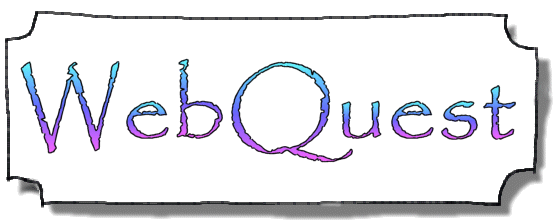

«Образовательный веб-квест - (webquest) - проблемное задание c элементами ролевой игры, для выполнения которого используются информационные ресурсы Интернета. Веб – квест - это сайт в Интернете, с которым работают учащиеся, выполняя ту или иную учебную
задачу. Разрабатываются такие веб-квесты для максимальной интеграции Интернета в различные учебные предметы на разных уровнях обучения в учебном процессе. Они охватывают отдельную проблему, учебный предмет, тему, могут быть и межпредметными. Особенностью
образовательных веб-квестов является то, что часть или вся информация для самостоятельной или групповой работы учащихся с ним находится на различных веб-сайтах. Целью данного веб-квеста является обучение решению задания №3 из ЕГЭ по информатике 2017
типа "Поиск определенного маршрута по таблице".
Заинтересованы?